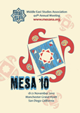

Conferences, Workshops and Speeches
| Middle Eastern Studies Association of North America (MESA) Annual Meeting Manchester Grand Hyatt, 18 - 21 November 2010 San Diego CA  The IIS sponsored a panel presentation at the 2010 Middle Eastern Studies Association of North America (MESA) conference held in San Diego, California, USA. The panel entitled, Approaches to Governance in the Fatimid Period, is a continuation from last year’s panel, Formulations of Authority in Early Shi‘i Islam, as part of the Institute’s ongoing endeavour in the field of Shi‘i Studies. As part of another panel entitled Reason and Revelation, Dr Nuha al-Shaar, Research Associate in the Institute’s Qur’anic Studies Unit and Dr Alnoor Dhanani, former head of the Department of Graduate Studies, each presented a paper. The Middle East Studies Association (MESA) is a private, non-profit, non-political, learned society that brings together scholars, educators and those interested in the study of the region from all over the world. It is responsible for the International Journal of Middle East Studies, the premiere journal on the region, and the MESA Review of Middle East Studies. The next MESA Annual meeting will take place in Washington DC, USA, from December 1-4, 2011. The panel was chaired by Dr Farhad Daftary and organised by Professor Paul Walker IIS publications were also on display at the book fair accompanying the conference. Presentations Made by Scholars:
Dr Shainool Jiwa Department of Community Relations Governing diverse Communities: The rule of Al-'Aziz bi'llah Abstract: When the Fatimids migrated from North Africa to Egypt, they inherited a subject population of considerable diversity, which included established Christian communities, such as Melkites and Copts, substantial numbers of Jews, as well as Sunnis and Ithna Ashari Sh‘ia. Many of these groups had distinct and contentious ethnic identities. The challenge of governing these ethnically and religiously diverse communities was amplified by the fact that the Fatimids reigned as Shi'i Imam-Caliphs, thus asserting their authority as legitimate heirs of the Prophet to the spiritual and temporal leadership of their empire. The paper focused on the initial phase of the Fatimid rule in Egypt. It will examine the reign of al-'Aziz billah, an era noted for great tolerance and inclusiveness. Not entirely without difficulties and occasional conflict, the decades of this caliph were nonetheless regarded as an exemplary period for the active participation of a wide range of groups, Christians and Jews among them, in his government. The paper reviewed the model of inclusive governance that al-'Aziz negotiated during his reign and discuss the challenges he faced in managing expectations of the diverse communities within his empire.
Following as much as a decade of harsh measures against the Christians and Jews of his realm, the Fatimid caliph al-Hakim seemed, in the last year of his reign, abruptly to alter his approach radically and allow, even promote, rebuilding of destroyed houses of worship and reversions from Islam back to an earlier dhimmi religion. Neither the original policy, which caused many of the Christians and some of the Jews to adopt Islam, nor the dramatic changes only months prior to his disappearance, have ever been explained adequately. The contemporary 11th century Melkite historian Yahya of Antioch, however, provides some vital clues and is particularly helpful about the caliph's shift in 1020-21 to a strategy of accommodation through personal contact with key figures in the affected communities, one individual for each who functioned as the single go-between in dealings with the ruler. The Coptic History of the Patriarchs confirms much of what Yahya reports. Using details in both, most especially the texts of royal decrees issued that very year, now found verbatim in Yahya's History, this paper provided a precise chronology of events and an outline of the imam-caliph's new policy. It thereby raised a question as to whether or not the new model he had created outlasted him; did his son al-Zahir and subsequent Fatimid rulers follow a similar pattern in their dealings with protected minorities.
When the Fatimids conquered Egypt in 969, they inaugurated their reign with a formal declaration of tolerance and magnanimity towards their new subjects. The proclamation, issued by order of the Fatimid imam-caliph al-Mu'izz (d.975) and quoted in full by the Mamluk historian Taqi al-Din al-Maqrizi in his Itti'az al-hunafa', is famously known as the Aman document. Indeed, it is generally agreed that the Fatimids never actively or forcefully tried to convert the population of Egypt which remained by and large Sunni. This being the case, one asks: what happened to the Sunni legal and theological scholars that were active in Egypt at the time of the Fatimid take-over and the subsequent decades of their ruler In this paper Delia Cortese retraced the way in which Sunni learning continued to be transmitted in Fatimid Egypt beyond the Ismaili religious and legal stances endorsed by the regime. In particular she provided a contextualised analysis of the factors that made Fatimid Egypt a lively centre for hadith scholarship and Qur'an recitation training. She addressed issues pertaining to the role that family interactions played in the preservation and transmission of Sunni learning against the background of an Ismaili 'state religion' and will question the existence of neat sectarian boundaries between Shi'is and Sunnis when it came to sharing or benefitting from learning. The period of Fatimid history under consideration will be the one spanning from the reign of al-Mu'izz to that of al-Hakim. Her main primary sources ranged from the works of Fatimid chroniclers such as al-Musabbihi to later chroniclers and historians such as Ibn Hajar al-Asqalani (his biography of Egyptian qadis, Raf ' al-isr) and al-Maqrizi (his biographical dictionary, al-Muqaffa al-kabir). The overall purpose of this research is to explore one facet of the prismatic social history of Egypt under the Fatimids (rather than the history of Fatimid Egypt) by placing the elite subjects, rather than the masters, at the centre of the investigation.
Related Pages on the IIS Website: |

 Gateways
Gateways